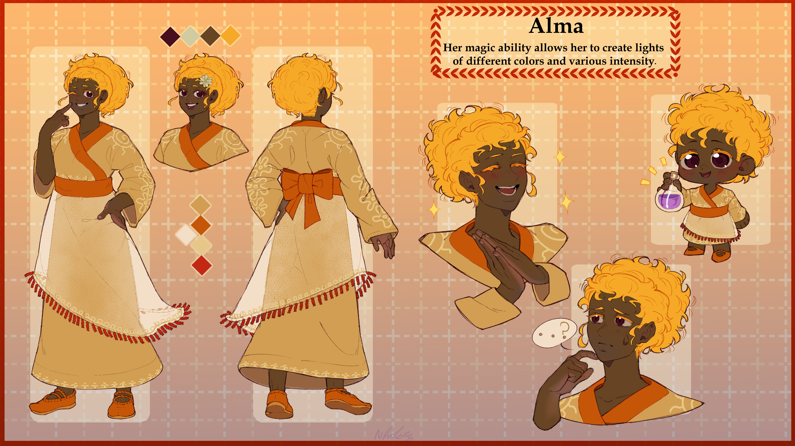
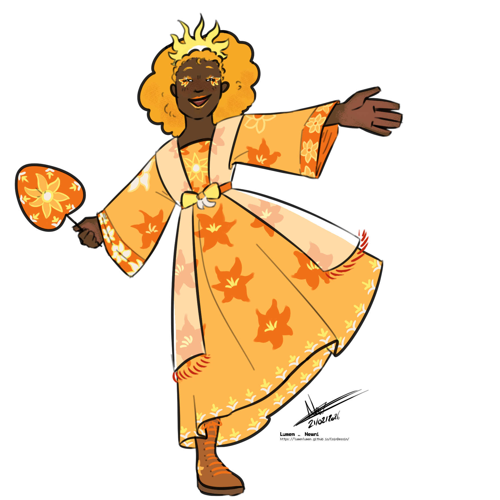

26 years old | 6'0"
Alma works at the orphanage as a teacher. She mainly teaches academic subjects (math, science, language, etc.). She lives in a small house in the woods, away from prying eyes. She is in a relationship with Sam, which they keep secret.
MAGIC
Alma can create light of varying colors and intensities.
NOTES
- Alma has orange hair, usually tied back at the nape of her neck.
- Her white dress is see-through except for the patterns.
- Alma practices witchcraft; feel free to depict her preparing a potion or writing runes.
- Alma is an artist; she primarily practices visual arts and writing, but is open to other activities.
- Alma is calm, cultured, and cheerful. She rarely gets angry, but when she does it's noticeable. She can sometimes seem a bit haughty.
IDEAS
- Alma carving an animal out of wood, painting a depiction of a deity — any artistic endeavor works.
- Alma preparing a potion, a charm, or any other enchanted object.
- Alma standing in front of the classroom blackboard, teaching the orphans.
- Alma and Sam engaged in a private couple’s activity or making music together — their relationship must remain secret, so nothing in public.
REFERENCES

Made by NholaeDaily outfit
Alma wears this outfit both at work as a teacher and in her everyday life. The white over-dress she is wearing is see-through.
Alma sometimes adorns her hair with a white flower or wears make-up when the mood takes her. She is the sort of person who takes care of her appearance.
She does not wear the traditional red of Félicie’s nobility because she is not from there. In Wicii, orange is the colour associated with the nobility.

Made by NewniOccasion wear
For ceremonies and special occasions, Alma wears a more elaborate and ornate outfit. She can wear jewellery, headdresses or make-up as she pleases. She’s certainly not short of funds, so feel free to load her design with accessories.
26 ans | 183 cm
Alma travaille à l'orphelinat en tant que professeure. Elle enseigne principalement les matières académiques (maths, sciences, langue, etc.). Elle vit dans une petite maison dans les bois, à l'écart des regards. Elle est en couple avec Sam, relation qu'ils gardent secrète.
MAGIE
Alma peut créer de la lumière de différentes couleurs et intensités.
NOTES
- Alma a les cheveux orange, qu'elle attache généralement à la nuque.
- Sa robe blanche est transparente sauf pour les motifs.
- Alma pratique la sorcellerie ; n'hésitez pas à la représenter en train de préparer une potion ou d'écrire des runes.
- Alma est artiste ; elle pratique surtout les arts visuels et l'écriture, mais est ouverte à d'autres activités.
- Alma est calme, cultivée et joyeuse. Elle s'énerve rarement, mais quand c'est le cas, ça se voit. Elle peut parfois paraître un peu hautaine.
IDÉES
- Alma sculptant un animal dans du bois, peignant une représentation d'une divinité — toute activité artistique convient.
- Alma en train de préparer une potion, un charme ou un autre objet enchanté.
- Alma devant le tableau de la classe, enseignant aux orphelins.
- Alma et Sam en activité de couple privée ou en train de chanter/jouer ensemble — leur relation doit rester secrète, donc rien en public.
RÉFÉRENCES
Tenue quotidienne
Alma porte cette tenue dans son travail de professeur et dans sa vie quotidienne. La sur-robe blanche qu'elle porte est transparente.
Alma orne parfois sa coiffure d'une fleur blanche ou met du maquillage quand l'envie lui prend. Elle est du genre à prendre soin de son apparence.
Elle ne porte pas le rouge traditionnel de la noblesse de Félicie car elle n'en est pas originaire. À Wicii, c'est plutôt le orange qui est la couleur des nobles.
Tenue festive
Pour les cérémonies et les occasions, Alma porte une tenue plus riche et plus ornée. Elle peut porter des bijoux, des coiffes ou du maquillage selon son envie. Ce n'est pas le budget qui lui manque, vous pouvez charger son design d'accessoires.
GALERIE
TBD
CREDIT
Hover over the images to see the artist's name and link.
Original design by yawningama.
Daily outfit designed by Newni.
Occassion outfit designed by SorbettoDrawz.